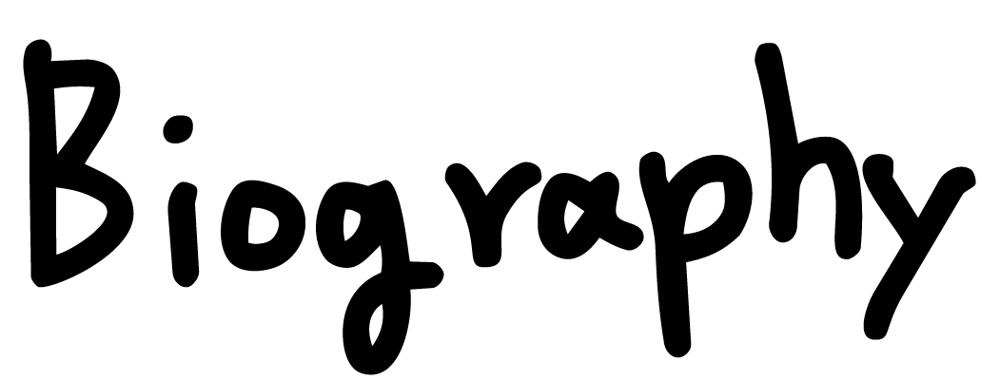
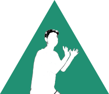

I am ABE
Human-Being of the earth
日本生まれ。孤独な大学生活を終えた後、カナダへ渡航。いろんな国の友達がたくさんできる。
帰国後一般企業へ就職したが、上司が仕事中によく寝ていたので退職。
その後専門学校へ通いインテリアや建築設計についてを学ぶ。
アトリエ系建築設計事務所に入るが、「建築家として生きていくには建築に対する熱が足りない」と思い退職。
そして現在、全く違う職種で働きながらも「ものづくり欲」を持ち続けている。
Born in Japan. After graduating from totally alone University life, went to Canada to live and made a lot of friends from many other countries.
Worked as SE in general company after coming back to Japan. My boss fell asleep a lot of times during job, so quit from the company.
After then, went to a technical college to learn about Interior designs and Architecture.
Worked at the architectural design office as an assistant after graduating from the college.
noticed like "I do not have much passion for living as an architect" and decided to quit.
And now, have worked as different type of job and kept having "desire of create".